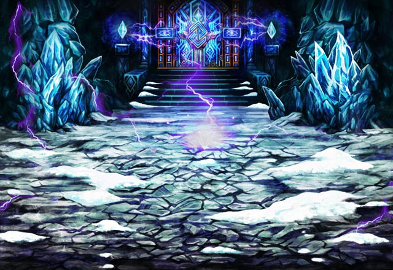

セリア
あの傷だらけの状態でこの力、 武神の名を持つだけあるわね。
カル
俺たち全員で戦ったとしても どうなっていたことか……。
ルジーナ
ケッ、そんな状態に追い込まれてる時点で こいつの敗北は決まってたんだよ。
？？？
無能な猿でもたまにはまともなことを 言うんですね。
モーラ
さあ、シュスイをこちらに渡してください。 その力があればメノンへの道は開かれます。
ルジーナ
シュスイさんの奮闘を見てたら 俺も気持ちが変わってきちまってなー。
パリス
単に嫌がらせがしたいだけよね……。 本当に性格悪いわね……。
ルジーナ
苦労して倒したシュスイを こいつに簡単に渡せるわけねーだろうーが！
セリア
倒したのはShou-chan だけれどね。
モーラ
やはり無能な猿ばかりでしたか。 結果は変わらないのに無駄な過程を増やす。
モーラ
予定を変えてここであなたたちに 消えてもらっても構わないのですよ。
カル
まあ、アンタも俺たちがわかってるって 知ってるんだろうし、
カル
俺たちが結果を変えられないだろうことも 予測してるんだろうな。
カル
だが、俺たちも感情のままに 動きたくなる時があるかもしれないぜ。
シュスイ
我が名は闘魔武神シュスイ。 最強を求める魔神なり。
シュスイ
闇魔仙神モーラよ。 我が武神の力を受け取るがいい。
シュスイ
それを生み出すためなら 我が生命すらもその糧でしかない。
パリス
あなたの力を与えて モーラを最強の存在にしようというの？
シュスイ
武神の力を取り込みさらなる高みへと達した 闇魔仙神を超えてみせろ。
シュスイ
我が師がその生命をかけ、 我を武神へと導いたように。
シュスイ
その時こそ汝は武神をも超えた 最強の存在となるだろう。
モーラ
くだらない話はもういいでしょう。 だから私はあなたが嫌いなのです。
モーラ
ただ強さだけを求める野蛮な存在。 魔神そのものを具現化したような存在。
モーラ
あなたが生涯を賭して鍛え上げたその力を 私に捧げなさい！
シュスイ
召喚師…よ……。 我と…師の…夢を……。
シュスイ
今なら…貴方の… 最後の…表情の…意味が……。
モーラ
そこで、私もあなたたちとの 決着をつけましょう。
パリス
予定通りシュスイを倒したけれど どうにも後味が悪いわね……。
カル
あのシュスイっていう魔神。 どうにも憎めない部分もあったからな。
セリア
バリュオンは力を奪われても まだ生きていたのに……。
ルジーナ
モーラもかなりブチ切れてたみたいだし 必要以上に力を奪ったのかもな。
ルジーナ
とはいえ、あれだけしつこかったシュスイが そう簡単にくたばるとは思えねー。
ルジーナ
どこかに“力の欠片”とかいって 余力を残してるかもしれねーな。
カル
Shou-chan、 お前もあまり気にするなよ。
カル
お前はシュスイの期待に応えた。 そして俺たちは目的に向かって進んでいる。
カル
魔皇城エストリアまで どんな罠があるかわからない。